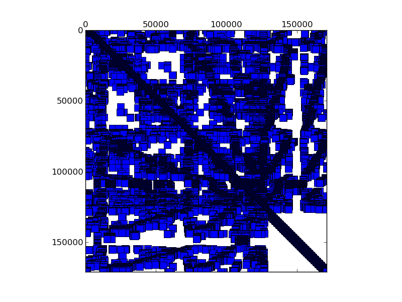

Matrix: scircuit
Program arguments: ../build/test_spmv_sim ../fpga16-benchmark/fpga16/scircuit.mtx File: ../fpga16-benchmark/fpga16/scircuit.mtx Sorting took: took 0.0790234 seconds. Param MatrixPath ../fpga16-benchmark/fpga16/scircuit.mtx Running on DFE Result Simple Total cycles=2263605, Result Simple Padding cycles=26, Result Simple Reduction cycles=2051976, Config ArchitectureId 2 Result Simple Input width =16, Result Simple Pipes =1, Result Simple Iterations=1, Result Simple Took (ms)=57.8693, Result Simple Est (ms)=0.0226361, Result Simple Gflops (est)=0.0847264, Result Simple Gflops (actual)=3.31414e-05, Result Simple BWidth (est)=17.8814, Test failed: 3 mismatches Tests failed!

Name, Order, Nonzeros, Unique Values, Sparsity, MC(2), MC(5), MC(8), MC(10) scircuit 171000 958936 285071 0.00328 0.10046 0.20421 0.33694 0.43924 0.59386